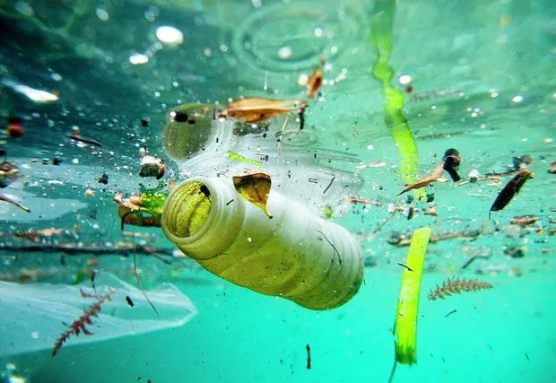

Bem-vindo ao nosso portal dedicado à conservação da vida marinha! 🌊🐠
Nosso oceano é um tesouro vasto e precioso, repleto de biodiversidade e ecossistemas únicos que sustentam a
vida no planeta. Desde os majestosos recifes de corais até as profundezas inexploradas dos abismos marinhos,
cada canto do oceano desempenha um papel crucial na manutenção do equilíbrio ambiental e no suporte às
comunidades humanas.
Aqui, nossa missão é promover a conscientização e a ação em prol da preservação dos mares. Através de
iniciativas educativas, projetos de conservação e colaborações globais, buscamos proteger e revitalizar os
habitats marinhos, garantindo um futuro sustentável para as gerações futuras.

No nosso site, você encontrará informações detalhadas sobre as ameaças que os oceanos enfrentam como a
poluição. Além disso, oferecemos dicas práticas sobre como você
pode contribuir para a preservação da vida marinha no seu dia a dia, seja reduzindo o uso de plásticos,
apoiando práticas de pesca sustentável ou participando de campanhas de limpeza das praias.
Junte-se a nós nessa jornada para proteger os oceanos! Cada pequena ação faz a diferença e, juntos, podemos
criar um impacto positivo e duradouro. Explore nossos recursos, participe das nossas campanhas e torne-se um
defensor da vida marinha.
Como você pode ajudar?